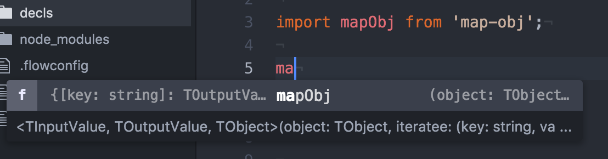
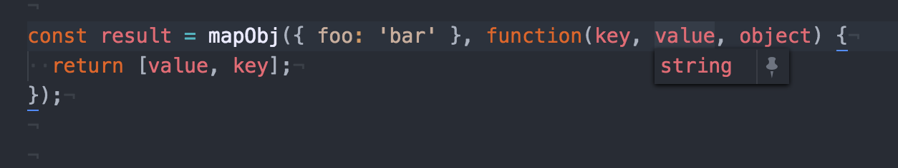
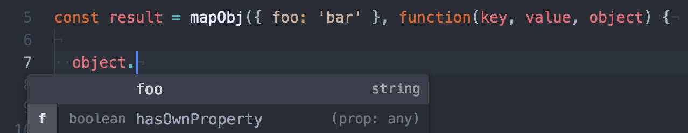
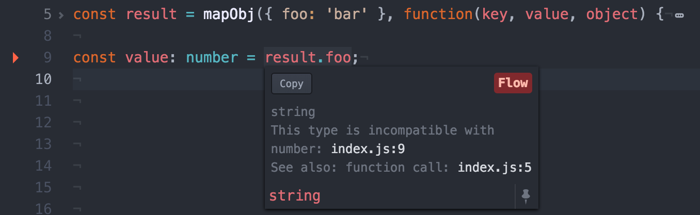

Flow is a static type checker for JavaScript designed to make you more productive by providing feedback as you write code. Flow provides you with helpful warning messages pointing exactly where something went wrong rather than having to debug errors at runtime that might appear somewhere far away from the source.
Flow does this in a way that is easy to incrementally migrate your code to use types and uses inference to find bugs in your code even when it does not have types. Flow embraces the dynamic nature of JavaScript rather than rigidly telling you how mad it is at you like other type systems you might have hated in the past.
Types in Flow are pretty easy to get used to, they look like this:
function square(n: number): number {
return n * n;
}It extends the JavaScript syntax with a nice clean type syntax that operates almost like documentation, but in a way that prevents bugs, improves your development experience, and never goes out of date (You can even generate real documentation from it!).
But even in places where you don't write types, Flow doesn't stop working. Using extremely powerful inference, Flow can track types even when they are no where to be seen. I'll demonstrate this later on.
In order for Flow to be as helpful as possible, it needs types for more than just your source code, it needs it for the libraries and frameworks that you use.
Library definitions look like this:
declare module 'my-repeating-library' {
declare function repeat(str: string, n: number): string;
}Then when you go to use your library you have types all ready for you:
import {repeat} from 'my-repeating-library';
repeat(10, "Hello");
^ number. This type is incompatible with string
^ string. This type is incompatible with numberWhen you have awesome type definitions for your libraries, Flow's inference engine can take over the rest and types are rarely needed at all.
Developers of these libraries and frameworks can include their own definitions using .flow files (and in an ideal world they all would!). If types are not included out of the box then there is an easy way for you to create your own definitions for them and even share your definitions with the Flow community.
Since types in Flow are created incrementally, there are different levels of coverage. You can get away with loose typing if you want to (and Flow will still do a ton for you), or you can spend a little bit more time and make even more helpful types.
Today, we're going to walk through a real definition file that I wrote for Sindre Sorhus' map-obj package. I started off by writing fairly loose types and incrementally worked my way to super high quality types.
Later I'll demonstrate how getting the types right in one place meant that I could write less types later on because of Flow's powerful inference.
Going through this you'll learn about how great type definitions are made, and how to use some advanced features of Flow to make it work even harder to make your development experience nicer for you.

The api of map-obj is fairly simple: We iterate over the key-value pairs of an object and return new key-value pairs as an array in order to create a new object.
import mapObj from 'map-obj';
const newObject = mapObj({foo: 'bar'}, (key, value, object) => {
// first element is the new key and second is the new value
// here we reverse the order
return [value, key];
});
// => {bar: 'foo'}Since I'm using Flow and this library does not have any types I want to create a library definition file.
I'll create the module definition:
declare module 'map-obj' {
...
}Then I'll declare the default exported function:
declare module 'map-obj' {
declare export default function mapObj(...): ...;
}And now I'll add the types for the basic api:
declare module 'map-obj' {
declare export default function mapObj(
object: Object,
iteratee: Function
): Object;
}We've added the basic types of the params, but we're not detailing the arguments of the iteratee at all. So lets do that.
Flow supports describing these "iteratee" or "callback" functions using this syntax:
(param: paramType) => returnedTypeI'll just add that to the definition:
declare module 'map-obj' {
declare function exports(
object: Object,
iteratee: (
key: string,
value: any,
object: Object
) => Array<any>
): Object;
}
Now the Array here is a little bit more complicated. It is what is known as a
"tuple" (Think of a tuple as an array that describes something using
positional items in the array, i.e. ["foo", 1, true]).
Flow supports these using the following syntax:
const tuple: [string, number, boolean] = ['foo', 2, true];Let's describe the array in our definition:
declare module 'map-obj' {
declare export default function mapObj(
object: Object,
iteratee: (
key: string,
value: any,
object: Object
) => [string | number, any]
): Object;
}Next, we are using Object all over the place without describing them at all.
Note that we are using these objects as a mapping of arbitrary keys to values. Flow can describe these maps with this syntax:
const obj: { [key: string]: number } = { foo: 1, bar: 2 };Using this in our definition looks like this:
declare module 'map-obj' {
declare export default function mapObj(
object: { [key: string]: any },
iteratee: (
key: string,
value: any,
object: { [key: string]: any }
) => [string | number, any]
): { [key: string]: any };
}You might notice we have 5 instances of any (meaning that we accept any type of value in those places).
It is true that mapObj will accept any type in those places,
however there is a relationship between them that we are not yet describing.
For these relationships we will use something known as "Polymorphic Types". These sound really scary, but they are actually much more simple than they sound.
In the following function identity we accept an argument sameValue that will immediately be returned.
function identity(sameValue) {
return sameValue;
}We want to communicate that whatever you pass as sameValue will be the same value that is returned.
In order to communicate this in functions, you do the following:
function identity<Value>(sameValue: Value): Value {
return sameValue;
}
Using <...> we say that "this function has these
polymorphic types", here we are creating "TSame". Then we are matching up
sameValue with the returned value.
Using polymorphic types in our function we want to do two things.
We'll create two polymorphic types, TInputValue and
TOutputValue:
declare module 'map-obj' {
declare export default function mapObj<Input, Output>(
object: { [key: string]: Input },
iteratee: (
key: string,
value: Input,
object: { [key: string]: Input }
) => [string | number, Output]
): { [key: string]: Output };
} There's actually one more thing we want to track through the function, and that's the object (the one was pass in is the same as the one in the iteratee).
However, we don't want to lose the
{ [key: string]: Input } types we have right now. Luckily,
using Flow we can describe our polymorphic types inside the
<...>. Reusing our identity example from earlier:
function identity(sameValue: Value): Value {
return sameValue;
} Let's move our object into another polymorphic type:
declare module 'map-obj' {
declare function exports<
Input,
Output,
Obj: { [key: string]: Input }
>(
object: Obj,
iteratee: (
key: string,
value: Input,
object: Obj
) => [string|number, Output]
): { [key: string]: Output };
}Now that we've defined the types for our library we can use it like this:
import mapObj from 'map-obj';
const res = mapObj({ foo: 1, bar: 2 }, (key, value, object) => {
return [value, key];
});Notice that we don't need any types in the above code. All the hard work we put in pays off by allowing us to write plain JavaScript code with 100% type safety.
These types also become really useful when we have an IDE that supports Flow such as Nuclide.
As we type we get auto-completion:
We can hover over values and see their type:
Using those polymorphic types we can auto-complete known values:
We also get nice inline warnings when we've done something incorrect:

Now that we've written our definition for the map-obj package,
we should share it with anyone else who might want to use that package.
For this Flow has a centralized repository, flow-typed, which includes high-quality definitions for tons of popular packages.
Now that you've spent all this time reading this article and learning about how to create high-quality definitions for Flow, why not solidify that knowledge by contributing your own definitions to flow-typed? Doing is one of the best ways of learning and we could really use the help!
Go find some random tiny package that doesn't yet have a definition file in flow-typed and try to create one yourself. Try making a PR and we'll help you clean it up and make it perfect.
If you need help finding a package, take a look through Sindre Sorhus's 8 trillion other npm packages. They're nice and tiny so they shouldn't take you long!